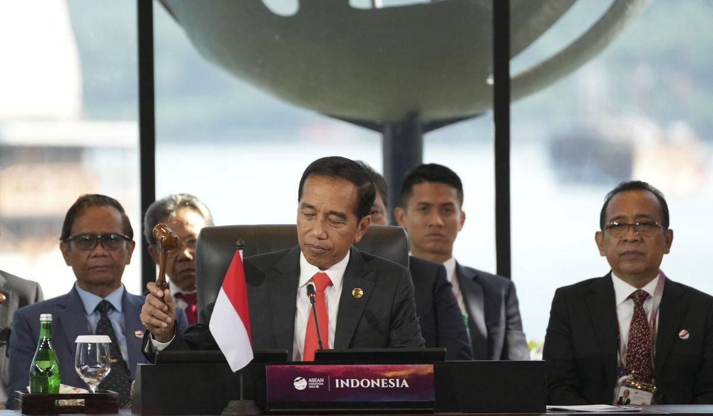

ASEAN leaders condemn attack on aid convoy in MyanmarLABUAN BAJO, Indonesia — Southeast Asian leaders condemned an attack on an aid convoy that the regional group had arranged for displaced people in Myanmar, calling Wednesday for an immediate stop to violence and for the military government to comply with a peace plan. Leaders of the Association of Southeast Asian Nations convened in the picturesque harbor town of Labuan Bajo in southern Indonesia at the start of a two-day summit. Their host, President Joko Widodo, called for unity amid global economic headwinds and major-power rivalry that’s lashing the region. The 10-nation bloc has come under international pressure to effectively address the crisis in Myanmar. But ASEAN members appeared to be divided on how to proceed, with some recommending to ease punitive actions aimed at isolating Myanmar’s generals and invite its top diplomat and officials back to the high-profile summit meetings. “The time for isolation has served its purpose,” said an internal ASEAN report obtained by The Associated Press. Over the weekend, a convoy delivering aid to displaced villagers and carrying Indonesian and Singaporean diplomats came under fire in Myanmar’s eastern Shan state. A security team with the convoy returned fire and a vehicle was damaged, but there were no injuries, state-run television MRTV reported. Indonesia, which chairs ASEAN this year, had arranged for the aid delivery after a long-delayed assessment. “We condemned the attack and underlined that the perpetrators must be held accountable,” the ASEAN leaders said in a joint statement. For the second year, Myanmar’s top general was not invited to the summit. Senior Gen. Min Aung Hlaing led the army in seizing power from the elected government of Aung San Suu Kyi in February 2021, plunging the country into a civil strife and becoming ASEAN’s gravest crisis since its founding in 1967. ASEAN leaders said they were “deeply concerned with ongoing violence in Myanmar and urged the immediate cessation of all forms of violence and the use of force to create a conducive environment for the safe and timely delivery of humanitarian assistance and inclusive national dialogues.” During foreign ministers’ talks ahead of the summit, however, some suggested that the group reengage Myanmar’s military-led State Administration Council and “bring Myanmar back to ASEAN foreign ministers’ meeting and summits, noting that the time for isolation has served its purpose,” according to the ASEAN report. It did not identify the countries pushing for more leniency toward Myanmar despite international outrage against continuing military attacks in the country. The suggestion for ASEAN to bring Myanmar back into its fold was “noted,” the report said, hinting it did not received full approval from all the ministers. The ministerial talks stressed the Myanmar crisis should not affect ASEAN’s progress in building a regional community, said the report, which cited one observation that there would be no near-term solution to the Myanmar crisis. “There was also an observation that ASEAN might be experiencing a `Myanmar fatigue,’ which might distract ASEAN from larger goals of ASEAN community-building,” the report said. “Patience, flexibility and creativity are therefore required since there will be no quick fix to the crisis.” The report cited, without elaborating, concerns on rising transnational crimes, including human trafficking and illegal drug production originating from Myanmar. More alarmingly, it said, there was “a call to all parties to stop the influx of arms and financial funding into Myanmar, which leads to an escalation of the conflict.” More than 3,450 civilians have been killed by security forces since Myanmar’s military took power, and thousands more remain imprisoned, said the Assistance Association for Political Prisoners, which keeps tallies of casualties and arrests linked to repression by the military government. In April, a military airstrike killed more than 160 people, including many children, who were attending a ceremony by opponents of army rule, according to witnesses cited by Human Rights Watch. The group on Tuesday described the attack in which the military dropped a devastating thermobaric or vacuum bomb as an “apparent war crime.” Indonesia has considerably eased its fierce criticism of Myanmar’s military since assuming the rotating role as ASEAN’s leader. Foreign Minister Retno Marsudi said her country is taking “a non-megaphone diplomacy approach” to encourage dialogue and end violence, which are goals of a five-point peace plan the leaders negotiated with Myanmar’s military leader in 2021. In a post-summit communique to be issued by Widodo on behalf of the ASEAN leaders, they plan to renew a call for self-restraint in the disputed South China Sea, repeating language used in previous ASEAN statements. “Concerns were expressed by some ASEAN member states on the land reclamations, activities, and serious incidents in the area, including damage to the marine environment, which has eroded trust and confidence, increased tensions, and may undermine peace, security, and stability in the region,” said a draft of the communique. Please read our comment policy before commenting. |
 |